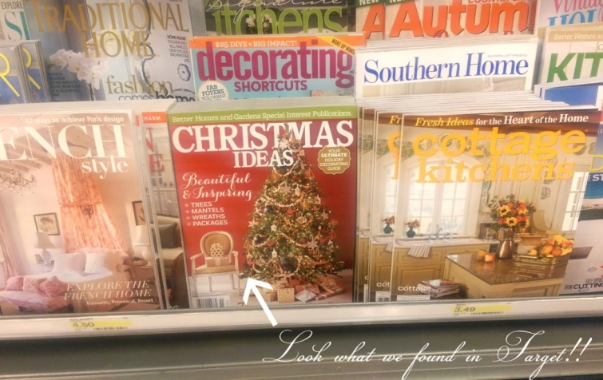
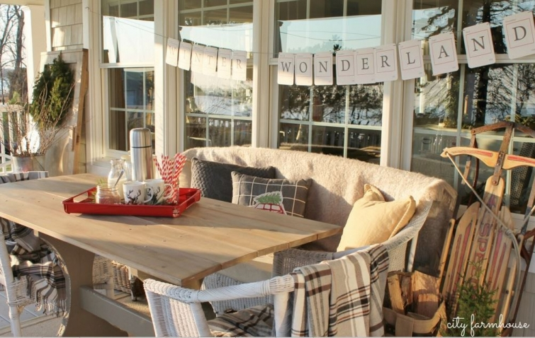

.png)
.PNG)
.PNG)
.PNG)
.PNG)
.PNG)
.JPG)
.JPG)
.PNG)
.PNG)



I really wanted to get back to the road trip posts today. Really. After all, they were already interrupted by the Mitford post, but I am just toooooo darn excited about this to wait any longer! (and I am not very good at waiting.) Way back in what seems like forever ago, we had some visitors in our home…visitors who worked for Better Homes and Gardens magazine. (I wrote about them here.) It was January, and we were decorated for…. Christmas. 🙂 They were very kind, took a lot of photos, and even filmed a few things here. And I know it is barely fall – much less anywhere near the Christmas holidays, but the Christmas Ideas magazine is out, and it was a lot of fun to finally see the finished product!
Clarissa, a thoughtful reader from Illinois, emailed me early on Saturday to tell me she had purchased her issue at her grocery store and wanted to let me know it was on the shelves. So with camera in hand, my husband and I sped over to Lowes to get him a hedge trimmer and look for the issue. I was all ready to photograph the happy moment….and then….the issue was not in yet. 🙁 I decided the shipments had not made it this far south to Georgia.
Last night we were in Target looking for a particular Halloween movie (which they didn’t have because they are still in back-to-school mode!)..no camera in hand, and there they were….an entire stack of the holiday magazines! The photos of the issue were taken with my husband’s phone. I scooped up 7 to share with family members and left plenty more for other shoppers when they get in the mood for Christmas.
The issue is full of holiday ideas and blogger home tours. Jennifer O’Brien writes at City Farmhouse. You will enjoy her neutral decor with all her homemade crafts. Here is her porch from a couple of years ago. My kind of porch!

Canadian floral designer extraordinaire and Coriander Girl shop owner, Alison Westlake’s converted church is simply charming. She blogs at coriandergirl.com. (There is a table with a green base in her feature that I would love to have!) Here is one of the Coriander Girl storefronts decorated for Christmas.
Sarah Caron’s feature has a neutral home with many pops of red for the holidays (so you know I am drawn to it!) She used to have a blog called Lacquer and Linen, but it does not seem to exist anymore. Here is her nursery board that was featured on her blog at one time. There is a photo of that beautiful bed in the Christmas Ideas issue.
I was beyond thrilled to be featured in the same magazine with wonderful Emily Lex from Jones Design Company! She and her husband Ryan were actually great mentors when I started this blog, and their online classes to help readers create their own blog came out right as I launched Talk of the House. (The classes are great by the way!) There is a special freebie from Emily in the magazine that you will definitely want to check out! 🙂
Do you remember Grace Sorensen from the blog, Grace Happens? She shared her beautiful home and precious family in her posts. Six years ago they moved from Virginia to California, and while Grace Happens was put on the back burner, she started an online business for gorgeous monograms – Celerie and South. (Thank you Holly Mathis for the one you sent me! 🙂 ) The Celerie and South blog site was down when I last checked because they are moving back to the South, but the site should be back up some time this month. All of this to say, there is a tour of her lovely home decorated for Christmas (along with that cute green Dutch door!) in this issue of the BHG Christmas Ideas magazine.
But the issue is not all blogger homes. There is still yet another home tour in the magazine, (from someone who is not a blogger) along with ideas for decorating Christmas trees, craft projects, floral arranging, gift wrapping, and even a few holiday table setting ideas from Thistlewood Farms’ KariAnne Wood. (My favorite is #4 when you get to that piece.) Oh, and our house is in there too! (You can find it between pages 46 and 57… if you are interested. 🙂 )
 But wait! There’s more!
But wait! There’s more!
Remember I told you they photographed and filmed when they were here? Well the creative and talented folks at Better Homes and Garden have put together a series of Christmas decorating how-to videos on their website. No video of me, but you can view holiday decorating “in action” here with our daughter as “the hand model.” 🙂
This is just one of five or six little videos that feature our home. So get your copy of the magazine, and you will find the link to all of them on one page of their website. 😉
Before I bring all of this to an end, I want to thank some folks who helped birth this baby of a project! Editor Ann Blevins who found us, calmed my worries, and got the ball rolling, stylist Nicole Teut who rearranged pillows and presents a zillion times, photographers Christine Anthony and Owen Masterson who were not only brilliant but also entertaining 🙂 , Sarah Wolf who took all my words in our looooong interview and turned them into an article we are all proud of, Katie Parker, the quietly calm girl with the lovely voice and the creative vision for the videos, Dave and Simon Presley, the British film guys who were sooo smart and sooooo much fun, and a big BIG thank you to all my family (especially my sweetheart husband, our daughter, and my mom) who worked on everything from Christmas trees to landscaping in the crazy month of January. This simply would not have happened without their help. Okay, I think that is all. Oh…one more! All of you readers here at Talk of the House for reading, commenting, pinning, encouraging, and letting me share my crazy decorating ideas with all of you! Ann Blevins never would have found us if not for you. (I sound like I am accepting some kind of Emmy; don’t I?! LOL)
Now that really is all. Go find that magazine in your nearest grocery store, Walmart, Lowes, Target, or bookstore, and enjoy! (And spread the word please!)
Until next time…
(when we really will be back on the road trip!)


.PNG)
Hello Kelly- Yes, the issue looks so good. Nice job. Thanks for inviting us into your beautiful home and letting us photograph it. (And the snacks! Oh my!) Happy Holidays.
O+C
———————————————————————
Happy Holidays to the both of you! Thank you for all your hard work on the feature. We loved having you here for the shoot….and yes, oh the snacks! I could go for a few sweets right now. 🙂 Thank you for stopping by the blog!
Kelly
Hi, Could you also email me the pdf file for the mantel village? I have spent over a month trying in vain to find it online or contact someone from BHG about it. I even posted on their FB page, to no avail. Thank you!
Could you please send me the pdf file for the mantel village? I’ve been looking everywhere and can’t locate it.
Thanks
First, let me congratulate you on the lovely feature on your home.
Next, I have the same issue as Rae Pierce,the pattern for the Mantel Village is no where to be found. I too am very disappointed.
I know this is really not your problem but there is no way to give this feedback to BHG on their website.
Would you mind forwarding this to BHG??
Thank you.
Jane
——————————————————————-
I have contacted the editor for this a couple of times because readers keep asking me for it. She sent me a link to click on: http://www.bhg.com/bhg/xfile.jsp?item=/marketing/registration/splash_pages/BHG_SnowVillagePatterns_Qsplash&temp=yes&ordersrc=rdbhg1110915 but I have been told that does not work. I have a pdf file I will email you (because I do not know how to include it here in the comment section.)
Kelly
I’ve been waiting for this all year! Will look for it when I go to Home Depot later today.
I’ve just purchased the Christmas Ideas book. Loved the Mantel Village and Church Ornament on page 26 but when I followed the instructions to get the pattern it has not been possible. Another friend has been searching also even went on the circuit web site as your article suggest and neither of us can find any pattern for this project. Has a mistake been made on your part of a incorrect site or has one not been created at all? Would you please advise us of what to do. Its the reason I purchased this issue. Thank You, Rae Pearce
————————————————————————-
I’m afraid our article is simply a decorated house featured in the magazine. We did not do any of the crafts in the issue. So I do not know anything about them, but I did go to the website, and you are right, it is not there on BHG. I also went to the Cricut site, and it seems that the patterns are not clickable. So I am going to forward your email on to the editor of the holiday issue so that she will know, and then she can hopefully get it corrected. That is a cute craft!
I hope this helps.
Kelly
{{Kelly}} Congratulations!! All of your blog readers know about your wonderful home and all you do to make it such a warm, inviting place. Now, the world gets to see it too!;) I’m so excited for you. This is going on my shopping list for this week. I may even have to stop at the grocery store after church tomorrow to pick up a copy:)
————————————————————————
You are too sweet girl! Thank you for your very kind comment here Kelly. I hope you can find a copy of the issue. I saw it in Barnes and Noble last night, and someone was actually reading the feature at the time. I wanted to say, “That’s our house! That’s us!” But I was too shy to say anything. Got to have more nerve!!!
Kelly
Kelly,
I was so excited when I found the magazine about your home. I was at the local grocery store and shoppers had to go around me in the magazine aisle. I couldn’t wait to get home and spend some time looking at how fantastic everything looked. Just beautiful and so warm and welcoming. Congratulations and so happy to see your home featured. I love buffalo check too and have it all over my home. What a treat to see how you add so much charm to all rooms.
———————————————————————–
Aw thanks Marlene!! That is too funny about blocking the aisle at the magazine rack. 🙂 I am glad that you enjoyed seeing the article in the issue. Be sure to check out the link in the article to all the videos on the BHG website (with our daughter “the hand model.” ha ha!)
Kelly
Kelly,
Am I surprised that your in BHG???? NO WAY!!! Your house is beautiful, warm and cozy at all times of the year. Even the EXPERTS recognize this!! At Christmas it is especially warm and inviting. I’m thrilled for you……and as always YOUR MY FAV!!! Hugs to you!
———————————————————————-
Jennifer your comments ALWAYS give me a smile and brighten my day!! Thank you for being one of my best cheerleaders!
Hugs to you too girl. 🙂
Kelly
Hello my friend! I miss you so much at The Chapel! As always it has been busy. We just celebrated a successful Grandparents Day.
I took time Friday night to catch up on your posts and was so excited to find out THE issue was finally out. I ran to the store yesterday morning to get my copy. You may notice “drive by, rubberneckers in the next few weeks”” …… Lol…..I couldn’t help but share with the cashier and everyone else in line at Publix that “this is my friend and she lives in Perry!” They were all amazed that a home town girl was featured in Better Homes and Gardens! I am so happy for you and all the joys retirement is bringing but always remember you are missed!
One proud friend!
Eddie
———————————————————————-
Well hello my friend too!!! So good to hear from you Eddie! I have been missing all of you as well (but not all the crazy paperwork that goes along with working there.) Thank you for catching up on the posts AND for getting a copy of the issue. I hope you like the decorating featured there (and on the BHG website videos. 🙂 ) Can you believe in just 2 little months it will be time to think about Christmas decorating AGAIN?! My brain has been pondering Halloween decor the last 2 weeks, and I am having a difficult time settling on ideas. Retirement has been busy busy busy! I hope everything is going good for you girl. Leave more comments! I love hearing from you! 🙂
Tell everyone there hello for me.
Kelly
Found my copy at my local Acme market.
You are the best.
So happy that Kerange Wood from Thistle Wood Farms blog is on page 114.
I can see why #4 is your favorite. Mine also
Congratulations to you and Walter!
———————————————————————–
I’m so glad you found a copy Nan! (Several people have been unable to locate the issue.) And great minds think alike…even when it comes to place settings. 🙂 Do you know the name of that plate pattern? I thought perhaps it is one of the Juliska patterns, but I don’t think that is correct.
Thank you the congratulations to both me and my husband. 🙂
Kelly
Kelly this is so well deserved. Your attention to detail and your own personal style is so unique! I applaud you!!
———————————————————————-
Thank you Cindy! I appreciate your sweet words about the magazine feature. 🙂
Kelly
That is so exciting! Congratulations, Kelly! I know you’re thrilled to see the finished product after all your hard work. After seeing your blog and the videos, your home with it’s warm, traditional, cottage-style feel is my favorite! I can’t wait to pick up a copy.
———————————————————————-
Thank you Renee. It certainly was exciting to see the finished product, and I was very excited that it came out 2 months earlier than I was expecting it! 🙂
Kelly
Congratulations Kelly! I’m so excited for you and will definitely pick this up as soon as I see it! YAY!!
———————————————————————-
Thank you Benita! I hope you enjoy the feature when you do run across a copy of the issue.
Kelly
That is so cool, Kelly! Congrats! I enjoyed watching the video too. You have a beautiful home. Love all the red touches.
———————————————————————
Thank you for watching the video Mary Charles, and thank you for the compliments on the house. If you like red, our house is the place to be! 🙂
Kelly
This was way too much excitement for me after the Big Party! I was totally exhausted but I just had to run out and get my copy of BH& Garden’s Christmas Ideas magazine!! What a truly outstanding photo/ article plus video of you and your family’s Christmas decorated home!!! Your daughter did a fabulous “hand modeling” job! Very graceful and lovely as usual. Nice to see the family photo — and I know how much you don’t like having your picture taken! I was thinking, too, how Ill you had been during that time– I truly don’t know how you were able to pull it all together. What a blessing to be able to see the many ideas. I really felt like I was there walking on a home tour!! Congrats — on a great job–well done!
——————————————————————
Wow! Thank you for the extra effort to get the magazine Louvina. I appreciate it. And thank you for all your sweet words about the feature. It was very nice to be able to see the finished product. I enjoyed seeing all your photos of your big shindig on your facebook page. It looks like it was a super creative event and everyone (especially your daughter) must have enjoyed the long fun-filled weekend! Great job on your event!!
Kelly
How exciting for you. I was so happy to find the issue in a local grocery store yesterday. Lovely photos and so many cute ideas that I’m sure will be used by many to decorate for Christmas. Your blog is an inspiration. Congratulations!!!
——————————————————————–
It was exciting to actually see it in print finally! I’m so glad you could find a copy Mary Ellen. Thank you for your very sweet comment on the blog and the feature.
Kelly
Kelly, I am so excited for you! Congratulations! And I can’t think of another person’s home that would fit in a Christmas article better than yours. Much deserved! Now I hope my little grocery store carries this in the magazine section. Looking today!
———————————————————————-
Goodness thank you Peggy! I do love Christmas…that’s for sure! 🙂 I have seen copies in a lot of the stores around here. (I want to pick one up in each of them and say to any of the shoppers around…LOOK! Here is our house!LOL…They would probably look at me like I am a crazy lady. 🙂 )
Kelly
I got my copy yesterday! It is a lovely spread. Congratulations! Becky in stormy Oklahoma
——————————————————————-
Yay! So glad you found a copy Becky! I am happy that you liked the feature.
Kelly
I have been to 3 stores to look for this – my two favorite things this time of year….back to school and the BHG Christmas Ideas magazine! I am so excited to see your home in it!! I am leaving early for my sons soccer game today hoping to find it in a bigger city, southwest Michigan is late! 🙂
———————————————————————–
I am so sorry you have had such a difficult time locating it Jill. I hope you will be successful in a larger city. I just got a copy in the mail from Meredith publications yesterday. So they are still in the process of getting them out.
Kelly
I happened to be in Hastings, our local bookstore, Saturday morning and was excited to pick up a copy. The issue is lovely but your home is a standout. Enjoy all the well deserved compliments.
——————————————————————–
Great! I am so happy that you were able to get a copy of the magazine! Thank you for your sweet compliment on our home. 🙂
Kelly
Congratulations!!!! What an honor. I can’t wait to get my copy—I so live for this Christmas issue with all of its great ideas. Bloggers are such great contributors…they keep things doable and real!
Jane x
———————————————————————-
Thank you Jane. It certainly was an honor to be featured! Christmas is the time when I seem to buy the most magazine issues…so many great ideas out there!
Kelly
Hey Kelly, Could hardly wait to get a copy, found mine at Target! I can’t wait to show everyone my friends house! Absolutely beautiful, so cozy and comfy! Love following your blog, sometimes I feel as though I’m on vacation. Thanks for all your articles.Congrats!!
————————————————————————
Yay for Target! (I just wish they had their Halloween things out here!) You go right ahead and show everyone your friend’s house. 🙂 Thank you for your very kind compliments, and I am glad that I can give you a virtual vacation from time to time.
Kelly
How wonderful! Congratulations! I can’t wait to purchase the magazine and check out your house and all the others. Have a wonderful week!
——————————————————————–
Thank you Vicky! It has been a very busy week here with a lot of cooking (and eating. 🙂 ) All the homes in the magazine were nicely done in their features I thought.
Kelly
Just returned from Target, where I purchased the magazine!!! Your lovely home translates just as well in print as it does online. Such hard and talented work deserves to be recognized and I am so happy you and your blog are receiving some of the recognition you deserve. Congratulations
Oh, I remember the shoot, how you were waiting to do it so you could decorate for Valentine’s Day. I will be sure to hunt a copy down, I love to see how others decorate for the holidays! Bet it was exciting to see the finished product of your hard work! Better practice your signature, your friends and family will be hounding you for your autograph! 😉
Congratulations! That magazine is a must-get every year for inspiration, and this year especially so! Happy for you, and can’t wait to get my hands on a copy!
I am going to the store to get it!!!! Congrats. The video is beautiful, as if I were there in your house.
Yeah! Congratulations!! I can’t wait to get the magazine and see how it all turned out on your photo shoot!
Congratulations! I can’t wait to get my copy and devour it from cover to cover.
Congratulations, Kelly and sooo deserving are you to be featured in Better Homes&Garden. I too will be searching for the magazine today. Enjoyed the video, and will be hanging a faux evergreen wreath over our bed during the holidays.
Oh, my! I can’t wait to buy my own copy. I will be saying…My friend’s house is featured in this magazine! Congratulations!!! I loved the video. Your daughter made the perfect “hand” model.
I am sooo excited for you! I am going to look for the magazine today!
Congratulations! You must be thrilled! I’ll be looking for it the next time I grocery shop! 😉
That’s what I get for grading (a mountain of) papers yesterday instead of playing on the computer!! Now I am going to have to wait until after school and go hunt that magazine down! (And all day the students will wonder why I am so impatient! ha!) Congrats on a well deserved feature. Lori Lucas
Congratulations, Kelly! Will have to swing by the store and pick up my copy.
Wow! Didn’t expect to see that your Christmas issue would be available this early! So happy for you Kelly and your family, as I know they support and help out so much. What a thrill it was for the photo shoot, I am sure but to see it in print now has to be so exciting!! It is a rainy day here in the Midwest, after a VERY HOT holiday weekend. I am dashing out between the downpours to grab my copy for sure today…can’t wait to see the layout and to have a “hand held” piece of “Talk of the House”.
Congratulations Kelly! I’m so happy for you. I just love your blog. Thank you!
Oh my word, oh my word! I can hardly wait to get the magazine! It will be my first errand tomorrow morning! I cannot wait!!! Congratulations, Kelly, to you and your entire family! Thank you for all your hard work! This is special for all your readers too! Thank you for letting us share in your excitement.😊
Sherry
After I saw your blog today, I ran out and was able to find the magazine. I immediately flipped to page 46 and enjoyed seeing your home decorated for Christmas. When I have time, I will look at the rest of the magazine for more ideas. How exciting for you! Great article!!
Hi Kelly,
Congratulations! I’m so excited for you and your family! How fun to see all your creativity and hard work in print! I ordinarily don’t like to think too much about Christmas this early in the fall, but for you, I must make an exception. I am already scheming how I can work a quick trip to Target into my lunch hour tomorrow. I will check Publix on my way to work, too! Well, again, congratulations and well-deserved, I must say! Now, this holiday season, relax and more important, stay well! xo Paula
I can’t wait, Kelly. Going to find the magazine has now moved to the top of my “to do” list for tomorrow. Dying to see your beautiful home and I so vividly remember the posts from last year about the filming, your illness etc, so I’m THRILLED that it has all come to fruition!! Well deserved, my friend!!
Congratulations Kelly!
I will definitely get it when I see it in a store near me.
This is all putting me in the Christmas spirit in the middle of September. Love it!
DiAnne
How absolutely freaking LOVELY! The hand model needs to go to super-model status immediately. She was great. Your ideas for decorating are so charming, I’m glad you’re getting the attention you deserve. Your creativity is impressive!
Kelly, this is so exciting! Can’t wait to see if the magazine is available here. The recognition is well deserved. Yours is the only decorating/home blog I actually read top to bottom and I savour every new post. Thank you for such inspirational ideas and trip reports. Congratulations!
Kelly, how exciting! I will have to pick up a copy.
Wow! wow! wow! How great is this! Your house will be a Christmas inspiration for many!
Congratulations on the article! I’m running out to get my copy now. xoxo, Anne
Kelly, how thrilling for you! I’m excited to see your home featured in the magazine! Will make a trip to Target very soon and pick up a copy, for sure. Congratulations! Warmly, Gracia
Love seeing the article! Going to look for the magazine today! I love seeing you get great recognition for your wonderful blog! It is well deserved. Definitely my favorite. Congratulations- your home looks beautiful!
I got it!!!! Beautiful. I told you I was going to go get one… luckily Lowe’s is near by. (for many reasons).
Now for my favorite chair, a glass of sweet tea and your article.
My next treat is getting to read Come Rain or Come Shine.
Cindy
Well deserved!!!!!!!!!!!!!!!!!!! (Loud applause)
So proud of you and your family.
Thanks for sharing.
You have NO ideal how much it means to have you touch my life!
You add inspiration and joy to your readers.
Pause and enjoy with your family.
Kelly,
First of all, Congratulations! I am so excited for you and the Better Homes and Gardens magazine. I will be looking to buy a copy at my local Hyvee and Barnes and Noble! I will read it cover to cover and then place it on my ottoman as an added Christmas decoration this year. Will you use it in you kitchen area by the chalk board and organizer too? Thanks for sharing all of this with us. Now I am off to pin some of your wonderful pictures onto my Pinterest boards for future reference. Take care.
Dawn
Hi Kelly, so exciting! I was just at Walmart this morning and didn’t know the magazine was out. Looks like I will be going on a magazine hunt in a few… So proud of you!
Cindy
I’ll look for the issue today as I plan to go out and do some shopping.
Your home and this blog is your labor of love and when you love what you do then it isn’t work but fun. Have a great Labor Day! and celebrate.
Go you! How fabulous! I seem to remember there were all kinds of glitches like illness and house tours you were committed to. I’m sure seeing your home published makes it worth all that.❤️
Oh, Kelly! I’m so happy you found it! Your holiday home is gorgeous and you should be very proud. I’m full of inspiration that I’m going to have to contain for a few more months. Haha!
Yay – top purchase the issue has been on my list all week. Think I’ll add a trip to Target for my list as this is one of my favorite holiday publications!
Can’t wait to see the magazine BH & G with your house! So proud of you and for you! I’m on my way to the store right now!
Congratulations!! I can’t imagine your excitement seeing it in print. Well worth interrupting your trip posts!! 🙂
Love that I will get to see your home in BH&G. My favorite posts are of your home. I can never get enough of seeing that beautiful porch. Your porch is my inspiration. Your whole house is just gracious and serene. Congratulations on being featured in BH&G.
Oh my word, congratulations!!!!! This is so exciting, and the videos are amazing. Can’t wait to get my copy.
The next time I am in Target, one of these magazines is going into my buggy!! So happy for your much deserved notice, Kelly!! Your home is just beautiful.
Isn’t your house your home your castle you? I like to think it is. Enjoy every moment, every laud with a wide grin and a full heart, the kind of full heart you have given me.
Sandra
Congratulations, Kelly!! I’ll be sure to look for this on my next Target run! (And Target runs are pretty frequent…just sayin’…) I am looking forward to seeing more of your decorating magic!
———————————————————————-
Thank you so much Cheryl! I think if our Target that is still in back-to-school mode had it, other Targets should already have it in as well. 🙂
Kelly
From a screen, mouse, mind… to famous! Oh yeah guts and execution too. Totally exciting.
Sandra
———————————————————————
Not quite famous, but the house is certainly getting some publicity. 🙂 After a lot of hard work, it is fun to see it all come together. Thank you for sharing in the excitement!
Kelly
Wow, congratulations!!
I will look for that magazine today!
——————————————————————–
Thanks Kathy! I hope you can find it!
Enjoy it on Labor Day. 🙂
Kelly